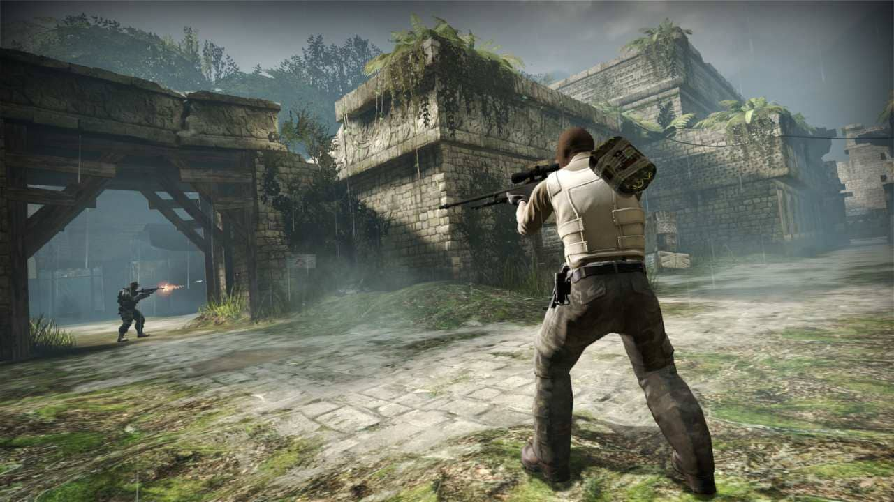

RDR 2, Steam Türkiye’ye damga vurdu! İşte en çok satan oyunlar
YSteam, 18 Nisan ile 25 Nisan tarihleri aralığında Türkiye'de en çok satanları listeledi. İşte en popüler oyunlar...

Dünyanın en büyük dijital oyun platformu Steam, her hafta düzenli olarak en çok satan oyunları listeliyor. Bizler de böylelikle popüler yapımları görebiliyoruz. Son olarak bugün güncellenen liste ile 18 Nisan ile 25 Nisan tarihleri aralığında Steam Türkiye’de en çok satanlar belli oldu..
Steam Türkiye’de en çok satan oyun: Counter-Strike: Global Offensive
Steam tarafından paylaşılan verilere göre Türkiye’de en çok satan oyun, Counter-Strike: Global Offensive oldu. Counter-Strike 2’nin duyurulmasıyla beraber liderliği ele alan yapım, uzun bir süredir birincilikten düşmüyor.

Çok satanlar listesinin ikinci sırasında ise oyuncular tarafından dünyanın en iyi hikayeli oyunu olarak görülen Red Dead Redemption 2 yer aldı. Yakın zamanda rekor seviyede zamlanarak 1 bin 150 TL’ye yükselen yapım, geçtiğimiz günlerde indirime girdi ve 379,50 TL’ye düştü. Bu indirim sırasında oyunculardan büyük ilgi gördü..